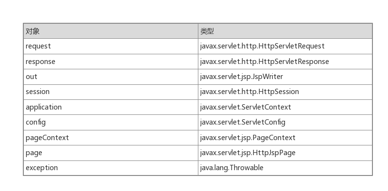
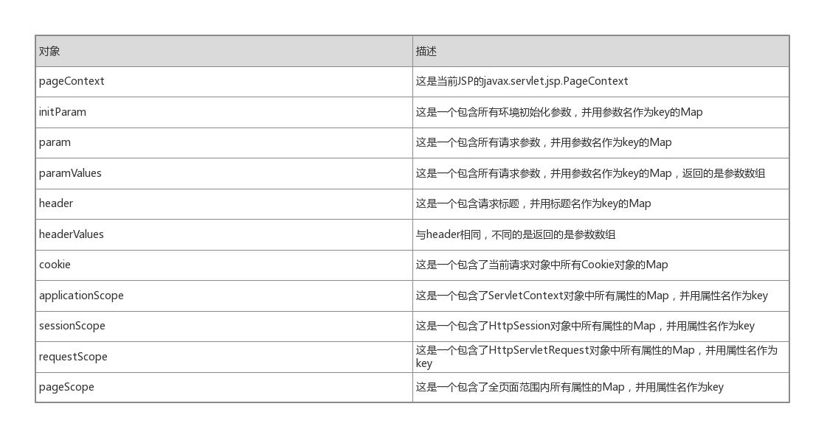
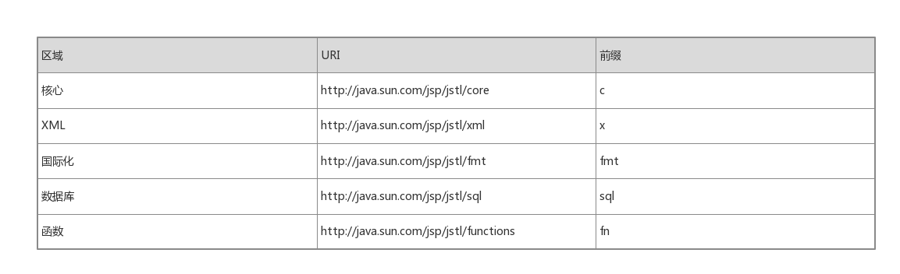

JSP概述
JSP是构建在Java Web应用程序上的第二种技术，是Servlet技术的补充，JSP页面本质上是一个Servlet。
当一个JSP页面第一次被请求的时候，Servlet/JSP容器主要做以下两件事情：
- 转换JSP页面到JSP页面实现类，该实现类就是一个Servlet
- 如果转换成功，Servlet/JSP容器随后编译该Servlet类，并装载和实例化该类，然后和其他正常Servlet一样执行生命周期
JSP页面可以包含模板数据和语法元素。这里，语法元素是一些具有特殊意义的JSP转换符。例如，”<%”是一个元素，表示java代码块的开始，”%>”也是一个元素，表示java代码块的结束，<%…%>块被称为scriplet。除去语法元素外的一切是模板数据，模板数据会原样发送给浏览器。
隐式对象
Servlet容器会传递几个对象给它运行的Servlet，例如HttpServletRequest和HttpServletResponse对象，等等。在JSP中，同样可以通过隐式对象来访问这些对象。如下图所示：

特别说明的是，PageContext中提供了用于获取和设置属性的方法，即getAttribute方法和setAttribute方法。属性值可以被存储为4个范围之一：页面、请求、会话和应用程序：
- PAGE_SCOPE：最小范围，存储的属性只能在用一个JSP页面可用
- REQUEST_SCOPE：当前的ServletRequest范围
- SESSION_SCOPE:当前的HttpSession范围
- APPLICATION_SCOPE：当前的应用程序范围
指令
指令是一种JSP语法元素的类型，指示JSP转换器如何翻译JSP页面为Servlet。
page指令
通过page指令来控制JSP转换器转换当前JSP页面的某些方面。例如，可以告诉JSP用于转换隐式对象out的缓冲器的大小，内容类型，以及需要导入的Java类型，等等。
page指令的语法：
<%@ page attribute1=”value1” attribute2=”value2” …%>
以下列举一些常见的page指令属性：
- import：定义一个或多个页面中将被导入和使用的java类型。
- buffer：以KB为单位，定义隐式对象out的缓冲大小，该值可以为none，表示没有缓冲，所有数据直接写入PrintWriter
- autoFlush：默认值为true，表示当缓冲满时会自动写入输出流。而值为false，表示仅当调用隐式对象out的flush方法时，才会写入输出流
- contentType：定义本页面隐式对象response的内容类型，默认是text/html
错误处理
使用page指令的的isErrorPage属性(值为true)来标识一个JSP页面是错误处理页面。其他需要防止未捕获的异常的页面使用page指令的errorPage属性来指向错误处理页面即可。
include指令
可以使用include指令将其他文件中的内容包含到当前的JSP页面。
include指令语法：
<%@ include file = “url”%>
url为被包含文件的相对路径，若url以一个斜杠(/)开始，则该url为文件在服务器上的绝对路径，否则为当前JSP页面的相对路径。
脚本元素
脚本程序也是JSP的语法元素，是一个java代码块，以符号<%开始，符号%>结束。但是，随着JSP2.0对表达式语言的加强，在JSP页面中使用EL访问服务器端对象且不写Java代码，所以可以禁用脚本元素。关于脚本元素在这就不多做介绍了。
动作
动作是JSP第三种类型的语法元素，可以被转换成java代码来执行操作，如访问一个java对象或调用方法，除了标准之外，还可以创建自定义标签执行某些操作。
介绍一些常见的动作：
1.useBean:创建一个关联Java对象的脚本变量。例如，下面代码将创建一个java.util.Date实例，并赋值给名为today的脚本变量。
2.setProperty和getProperty:setProperty动作用于对一个Java对象设置属性，getProperty则输出Java对象的一个属性。
3.include:用来动态地引入另一个资源，可以引入一个JSP页面，一个Servlet或者一个静态的HTML页面。
|
|
include指令与include动作的区别：对于include指令，资源引入发生在JSP容器将页面转换成为Servlet的时候。对于include动作，资源引入发生在页面请求时，因此，include动作可以传递参数。
4.forward：将当前页面转向到其他资源
表达式语言
表达式语言(Expression Language):用户用它来访问应用程序数据，编写免脚本的JSP页面。
EL语法
EL表达式以 ${开头，以}结束。结构：${expression}
例如，若a+b=8，c+d=10，那么 ${a+b} ${c+d}的计算结果为字符串类型的”810”
为了访问对象的属性，可以使用以下任意一种形式：
${object[“propertyName”]}
${object.propertyName}
但是，如果propertyName不是有效的Java变量名，只能使用[]运算符。
在EL表达式中，想要访问List，Array，Map对象的某个元素，使用expr-a[expr-b]形式的表达式。假设，expr-a为java.util.Map，expr-a[expr-b]会查看expr-b是否为Map中的一个key，若是，则返回expr-a.get(expr-b)，若不是，则返回null。
EL隐式表达式

EL表达式中的函数
在EL表达式，可以使用function标签库中函数，为了使用这些函数，必须在JSP的最前面使用以下taglib指令：
<%@ tablig uri=”http://java.sun.com/jsp/jstl/functions“ prefix=”fn”%>
调用格式：
${fn:functionName}，这里functionName是函数名
下面介绍一些常用的函数：
- contains(string,substring)：测试一个字符串中是否包含指定的子字符串
- endsWith(string,suffix)：测试一个字符串是否以指定的后缀结尾
- escapeXml(string)：将字符串进行XML转义，保证该字符串能正确被XML解析器解析出来
- indexOf(string,substring)：返回指定子字符串在某个字符串中第一次出现时的索引
- join(array,separator)：将一个string数组中的所有元素合并成为一个字符串，并用指定的分隔符分开
- split(array,delimeters)：将字符串按照给定的分隔符分隔开，返回一个字符串数组
- replace(string,beforeSubstring,afterSubstring)：将字符串中出现的所有beforeString用afterString替换
- trim(string)：用于删除一个字符串开头和结尾的空白
JSTL
JSP标准标签库(JavaServer Pages Standard Tag Library,JSTL)是一个定制标签库的集合。用来解决像遍历Map或集合，条件测试，XML处理，甚至数据库访问和数据操作等常见的问题。
JSTL标签库：

在JSP页面中使用JSTL库，必须通过taglib指令：
<%@ taglib uri=”uri” prefix=”prefix”%>
例如，要使用Core库，必须在JSP页面开头处做以下声明：
<%@ taglib uri=”http://java.sun.com/jsp/jstl/core“ prefix=”c”%>
一般行为
下面介绍Core标签库中常用的一般行为：out，set，remove
out标签
out标签将结果输出到当前的JspWriter，out的语法有以下两种形式，一种有body content和没有body content：
|
|
out中的default属性可以赋一个默认值，当赋予其value属性的EL表达式返回null时，就会显示默认值，如果default值返回null，out就会显示一个空字符串。
set标签
set标签可以完成以下工作：
- 创建一个字符串和一个引用该字符串的有界变量
- 创建一个引用现存有界对象的有界变量
- 设置有界对象的属性
set标签用法：
1.创建字符串和一个引用该字符串的有界变量
|
|
2.设置有界对象的属性值
|
|
注意上面的target属性中必须要用一个EL表达式引用这个有界变量
例如，下面set标签将字符串”Beijing”赋予有界对象address的city属性：
|
|
remove标签
remove标签用于删除有界变量，但是有界变量引用的对象不能删除，语法如下：
|
|
条件行为
条件行为用于处理页面输出取决于特定输入值的情况，对应Java语言中的if,if…else和switch语法。
if标签
if标签是对某一个条件进行测试，假设结果为True，就处理它的body content，测试结果保存在Boolean对象中，并创建有界变量来引用这个Boolean对象。
|
|
choose、when和otherwise标签
choose、when和otherwise类比与Java语言中的switch、case和default。
举个例子就明白了：
|
|
遍历行为
当需要遍历一个对象集合时，遍历行为就很有帮助。JSTL提供了forEach和forTokens两个执行遍历行为的标签。
forEach标签
forEach标签会固定次数重复body content或者遍历对象集合，语法如下：
|
|
我们注意到forEach标签属性中有一个类型为javax.servlet.jsp.jstl.core.LoopTagStatus的变量varStatus，该类型描述了遍历行为的状态，例如，varStatus有count属性，返回当前遍历的次数。
forTokens标签
forTokens标签用于遍历以特定分隔符隔开的令牌，其语法如下：
|
|
例如：
输出：
A
B
C
格式化行为
JSTL提供了格式化和解析数字与日期的标签，它们是:
formatNumber,formatData,timeZone,setTimeZone,parseNumber,parseData。
这里就不介绍细节了，需要使用到的时候去官网查询它们的标签属性。
标签文件(自定义标签)
从JSP2.0开始，通过tag file的方式，无须编写标签处理类和标签库描述文件，也能够自定义标签了。tag file在使用之前无须编译，并且不需要标签库定义文件。
tag文件必须放在应用路径的WEB-INF/tags目录下才能生效，和其他文件一样，tag文件可以被打包到jar包里。
tag file指令
和JSP页面一样，tag file可以使用指令来指挥JSP容器如何编译这个tag file。除了page指令，其他所有的JSP指令都可以用于tag file，在tag file中可以使用tag指令代替page指令
taglib 指令：用于在tag file中使用自定义标签，语法如下：
<%@ taglib uri=”tagLibraryURI” prefix=”tagPrefix”%>
attribute指令：用于设定tag file中标签的属性,将值从JSP页面传递到tag file中处理
variable指令：将tag file中的一些值传递到JSP页面，定义那些需要传递到JSP页面的变量。相对而言，attribute指令将值从JSP页面传递到tag file。
举个tag file的简单例子：
我们创建一个tag file，名称是firstTag.tag，代码如下:
|
|
下面是使用这个tag file的JSP页面代码：
|
|
doBody
doBody动作元素只能在tag file中使用，它用来调用一个标签的本体内容(body content)并将内容保存在一个java.lang.String类型(var属性指定)或者java.io.Reader类型(varReader属性指定)变量中。如果不指定变量，doBody动作元素会把主体内容写到JSP页面的JspWriter上。
语法如下：
|
|